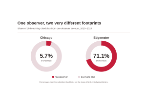
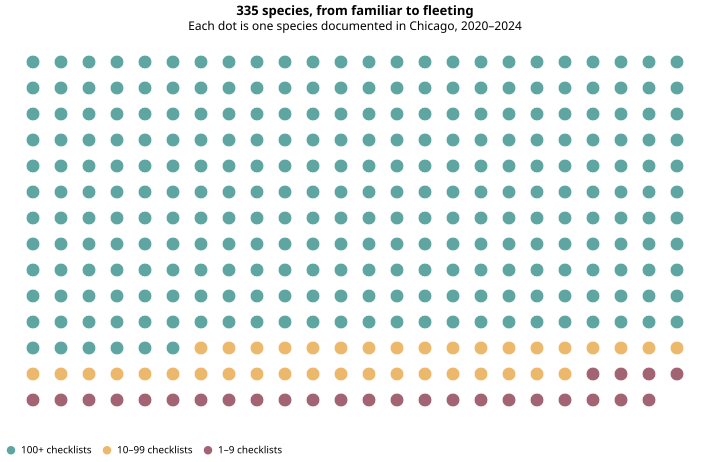
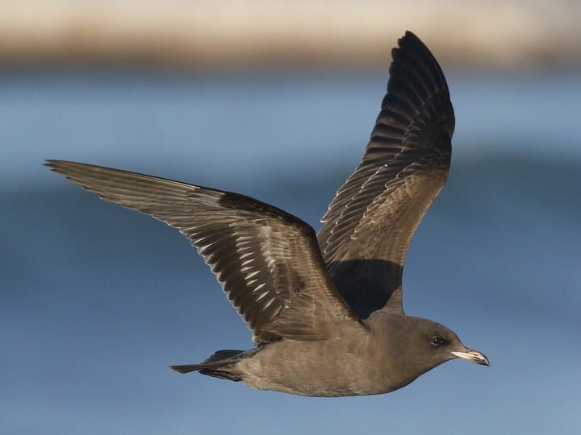
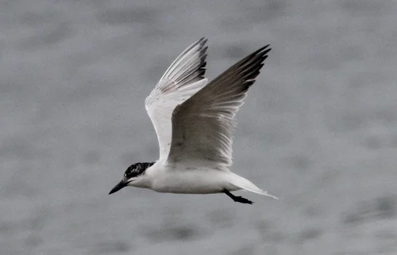
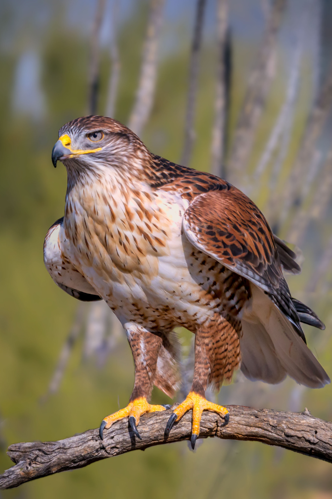

On Chicago's North Side, one birdwatcher submitted more than seven out of every ten birdwatching checklists recorded in Edgewater. That concentration raises a question about the city's bird record: how much of what we know depends on who's watching?
Every spring, Chicago's lakefront welcomes migrating birds and the people eager to find them. Birdwatchers share their sightings through eBird, a citizen-science project that brings individual observations together into a larger picture of birdlife.
218,781 checklists | 335 species | Five years
These records offer a way to explore the people doing the counting, the birds they report and the places where their attention gathers.
The Birders
One birder, two notable footprints
This eBird account contributed 5.7% of all Chicago checklists between 2020 and 2024. In Edgewater, that same account contributed 71.1%. The account's activity was concentrated in just two years: 1,490 checklists in 2023 and another 10,915 in 2024. That surge in reporting shows how one highly active contributor can shape a neighborhood's birdwatching record.

Two different leaders
The account with the most checklists submitted 12,405 reports. A different account led in total birds counted. Checklist activity and the number of birds reported give us two ways to understand a birder's contributions.

The Birds
Which birds make the most appearances?
The American Robin appeared on 111,897 checklists, more than any other species in the study period. Canada Geese led in the total number of birds counted. A familiar backyard bird can appear across many outings, while large flocks can add hundreds of birds to a single report.

335 species, from familiar to fleeting
The full species list gives us a broader picture. Of the 335 species documented, 270 appeared on at least 100 checklists, 38 appeared on 10 to 99 and 27 appeared on fewer than ten. Each dot represents a species, grouped by how often Chicago birdwatchers reported it.

Unexpected visitors
Among the less frequently reported species were birds whose visits made Illinois birding history. On December 8, 2024, observers found a Short-tailed Shearwater at Montrose Point. The ocean-going bird became the first confirmed Illinois record of its species. Three eBird accounts recorded it in Uptown that day.

December 8, 2024 | Uptown
Short-tailed Shearwater
A seabird usually found over the ocean appeared along Lake Michigan. The Chicago Ornithological Society documented the sighting as Illinois's first confirmed record.

June 1, 2023 | Uptown
Gull-billed Tern
This coastal tern appeared at Montrose Point. Two Chicago checklists recorded the bird, which became the state's second documented sighting. Read about Montrose bird sightings.

November 6–7, 2023 | Chicago
Ferruginous Hawk
This hawk of western North America's grasslands was reported in Uptown and the Near South Side on consecutive days. The Illinois records committee accepted the Chicago record. Learn about the species.
Photographs show the featured species at locations outside Chicago. Photo credits: Gull-billed Tern — Kris Webb; Ferruginous Hawk — University of Minnesota Raptor Center; Short-tailed Shearwater — Macaulay Library (photographer anonymous).
The City
Following the birds along the lakefront
Montrose Point draws birdwatchers to Uptown's stretch of lakefront. Uptown recorded the most checklists among Chicago's community areas and accounted for nearly one-third of birds counted in these records. The maps reveal how concentrated the city's reporting activity can be.

May is the peak. Winter has its birdwatchers, too.
May brings the biggest wave of checklists in every year of the study, during Chicago's spring migration. The heatmap also shows people submitting reports through December, January and February. Chicago's typical January high is about 32°F, with a low near 19°F. The city's birdwatchers keep looking through the cold months.
Winter conditions vary. February 2024 was Chicago's warmest February on record. Across these five years, the checklist submissions capture a year-round habit of watching birds.

What the birders show us
Chicago's birdwatching records grow through thousands of choices about where to go, when to look and what to submit. Those choices shape the patterns we see across neighborhoods, seasons and observer accounts.
From familiar robins to a shearwater at Montrose Point, the record tells a story about Chicago's birds and the community paying attention to them.